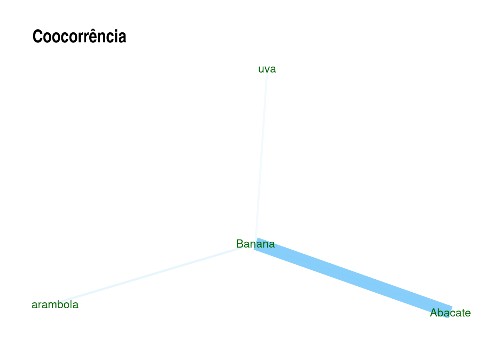
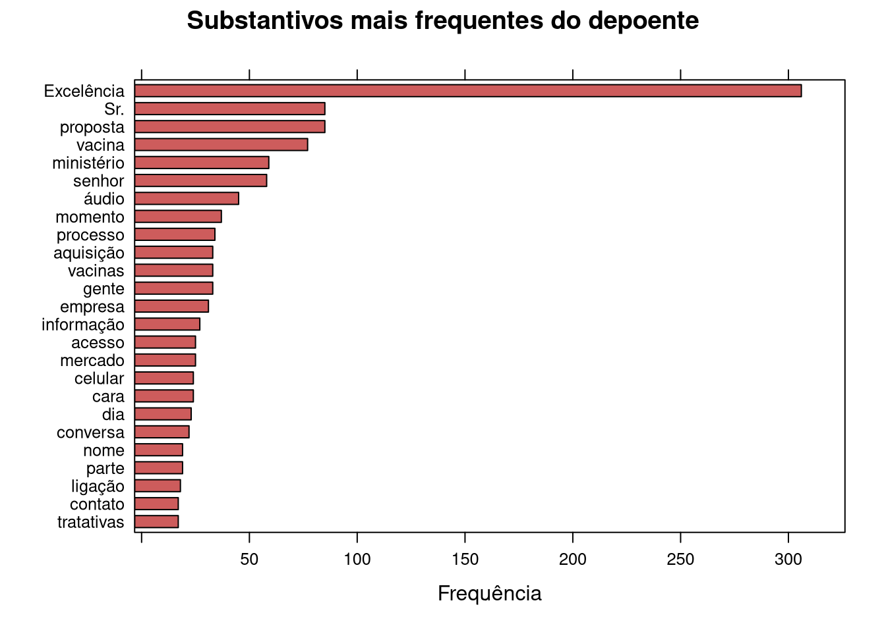
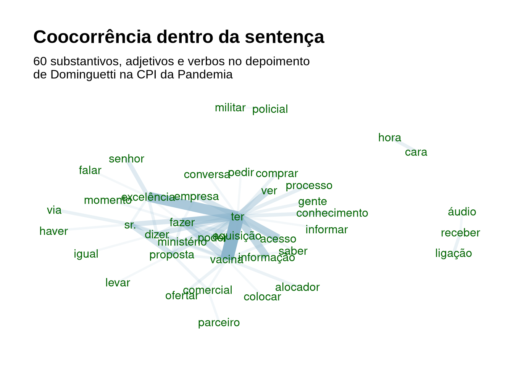

Capítulo 9 Text mining: Semantic Parsing
Até agora vimos abordagem onde a ordem das palavras, sua função gramatical não importava na análise. Vamos agora para análise onde isso se faz importante.
9.1 POS - Part-of-speech tagging
É possível identificar a classe gramatical das palavras em frases.
Vários pacotes no R fazem isso, como o
openNLP,
coreNLP (Wrapper ao redor do Stanford CoreNLP Tools) e a função qdap::pos() (requerem rJava, que requer JDE e JRE do Java instalados),
RcppMeCab que é um wrapper da biblioteca “mecab’,
spacyr, um wrapper ao redor do spaCy do Python (Requer o Python e a biblioteca Anaconda instalados),
UDPipe em C++ que possui modelos pré-treinados em 65 liguagens.
No caso de pacotes que requerem o Rjava, uma dica é, ao menos no Linux, antes de instalar o Rjava, rodar o seguinte comando no terminal (não no console do R!). O comando a seguir faz com que o Rjava consiga encontrar o Java, e assim evita alguns tipos de erro na instalação.
sudo R CMD javareconf 9.2 Pacote UDPipe
Para o P.O.S (part-of-speech tagging), vamos usar o pacote UDPipe, já que ele não requer Python ou Java, sendo um wrapper do UDPipe C++, evitando boa parte das complicações de instalação, como em outros pacotes. O projeto é da Institute of Formal and Applied Linguistics, Faculty of Mathematics and Physics, Charles University da Reṕublica Tcheca. A função de POS é baseada no Google universal part-of-speech tags. UD vem de universal dependencies, um framework aberto para anotações gramaticais com 200 treebanks em amsi de 100 linguas.
- Milan Straka, Jan Hajiˇc, Jana Strakov. ́UDPipe: Trainable Pipeline for Processing CoNLL-U Files Performing Tokenization, Morphological Analysis, POS Tagging and Parsing
- Modelos de línguas no github de jwijffels
Após instalar, carregando o pacote:
Vamos instalar um modelo de lingua não inglesa. Para ver a lista de linguagens disponíveis, rode o comando ?udpipe_download_model. Mas atente que nem todas as línguas estão disponíveis na última versão, sendo necessário a sua especificação. Para saber sobre os modelos em portuges utilizados no UD, veja aqui. Vamos utilisar a versão bosque, que funciona para PT-PT e PT-Br.
Tal como está, o download ocorrerá no diretório de trabalho atual (digite getwd() para saber)
# opção 1
dl <- udpipe_download_model(language = "portuguese-br",
udpipe_model_repo = 'jwijffels/udpipe.models.ud.2.0')
# Opção 2. "bosque" é a mais atual e mais utilisada
dl <- udpipe_download_model(language = "portuguese-bosque")
str(dl)Uma vez que o modelo foi baixado, vamos carregá-lo
udmodel_ptBosque <- udpipe_load_model(file = dl$file_model)Ou, caso tenha baixado em outro local:
udmodel_ptBosque <-
udpipe_load_model(file = "~/Documentos/R/portuguese-bosque-ud-2.5-191206.udpipe")E vamos aos testes:
library(dplyr)
texto <- "O rato Rogério roeu rapidamente a roupa roxa do rei Roberto de Roma."
txt.anotado <- udpipe::udpipe_annotate(udmodel_ptBosque, x = texto) %>% as.data.frame()
## This looks like you restarted your R session which has invalidated the model object, trying now to reload the model again from the file at /home/alisson/Documentos/Programação/R/analise_textual_sociologia/portuguese-bosque-ud-2.5-191206.udpipe in order to do the annotation.
str(txt.anotado)
## 'data.frame': 16 obs. of 14 variables:
## $ doc_id : chr "doc1" "doc1" "doc1" "doc1" ...
## $ paragraph_id : int 1 1 1 1 1 1 1 1 1 1 ...
## $ sentence_id : int 1 1 1 1 1 1 1 1 1 1 ...
## $ sentence : chr "O rato Rogério roeu rapidamente a roupa roxa do rei Roberto de Roma." "O rato Rogério roeu rapidamente a roupa roxa do rei Roberto de Roma." "O rato Rogério roeu rapidamente a roupa roxa do rei Roberto de Roma." "O rato Rogério roeu rapidamente a roupa roxa do rei Roberto de Roma." ...
## $ token_id : chr "1" "2" "3" "4" ...
## $ token : chr "O" "rato" "Rogério" "roeu" ...
## $ lemma : chr "o" "rato" "Rogério" "roer" ...
## $ upos : chr "DET" "NOUN" "PROPN" "VERB" ...
## $ xpos : chr NA NA NA NA ...
## $ feats : chr "Definite=Def|Gender=Masc|Number=Sing|PronType=Art" "Gender=Masc|Number=Sing" "Gender=Masc|Number=Sing" "Mood=Ind|Number=Sing|Person=3|Tense=Past|VerbForm=Fin" ...
## $ head_token_id: chr "2" "4" "2" "0" ...
## $ dep_rel : chr "det" "nsubj" "appos" "root" ...
## $ deps : chr NA NA NA NA ...
## $ misc : chr NA NA NA NA ...
# Para vermos apenas as classes gramaticais, apenas filtramos pela coluna:
txt.anotado$upos
## [1] "DET" "NOUN" "PROPN" "VERB" "ADV" "DET" "NOUN" "ADJ" NA
## [10] "ADP" "DET" "NOUN" "PROPN" "ADP" "PROPN" "PUNCT"Na coluna “upos”: - Roberto e Rogério são “PROPN”, ou seja, “proper names”, ou “nomes próprios” - rato aparece como “NOUN”, isto é, substantivo. - “VERB é verbo, ADJ é adjetivo, ADV é advérbio.
Se quiser fazer só o POS Tagging, sem fazer lematização, e com isto ganhar tempo, pode-se restringir com o argumento tagger que pode ser um vetor:
texto2 <- "O fundamento psicológico sobre o qual se eleva o tipo das individualidades da cidade grande é a intensificação da vida nervosa"
txt.anotado2 <- udpipe_annotate(udmodel_ptBosque,
x = texto2, tagger = "default" , parser = "none") %>%
as.data.frame()
txt.anotado2
## doc_id paragraph_id sentence_id
## 1 doc1 1 1
## 2 doc1 1 1
## 3 doc1 1 1
## 4 doc1 1 1
## 5 doc1 1 1
## 6 doc1 1 1
## 7 doc1 1 1
## 8 doc1 1 1
## 9 doc1 1 1
## 10 doc1 1 1
## 11 doc1 1 1
## 12 doc1 1 1
## 13 doc1 1 1
## 14 doc1 1 1
## 15 doc1 1 1
## 16 doc1 1 1
## 17 doc1 1 1
## 18 doc1 1 1
## 19 doc1 1 1
## 20 doc1 1 1
## 21 doc1 1 1
## 22 doc1 1 1
## 23 doc1 1 1
## 24 doc1 1 1
## 25 doc1 1 1
## 26 doc1 1 1
## 27 doc1 1 1
## sentence
## 1 O fundamento psicológico sobre o qual se eleva o tipo das individualidades da cidade grande é a intensificação da vida nervosa
## 2 O fundamento psicológico sobre o qual se eleva o tipo das individualidades da cidade grande é a intensificação da vida nervosa
## 3 O fundamento psicológico sobre o qual se eleva o tipo das individualidades da cidade grande é a intensificação da vida nervosa
## 4 O fundamento psicológico sobre o qual se eleva o tipo das individualidades da cidade grande é a intensificação da vida nervosa
## 5 O fundamento psicológico sobre o qual se eleva o tipo das individualidades da cidade grande é a intensificação da vida nervosa
## 6 O fundamento psicológico sobre o qual se eleva o tipo das individualidades da cidade grande é a intensificação da vida nervosa
## 7 O fundamento psicológico sobre o qual se eleva o tipo das individualidades da cidade grande é a intensificação da vida nervosa
## 8 O fundamento psicológico sobre o qual se eleva o tipo das individualidades da cidade grande é a intensificação da vida nervosa
## 9 O fundamento psicológico sobre o qual se eleva o tipo das individualidades da cidade grande é a intensificação da vida nervosa
## 10 O fundamento psicológico sobre o qual se eleva o tipo das individualidades da cidade grande é a intensificação da vida nervosa
## 11 O fundamento psicológico sobre o qual se eleva o tipo das individualidades da cidade grande é a intensificação da vida nervosa
## 12 O fundamento psicológico sobre o qual se eleva o tipo das individualidades da cidade grande é a intensificação da vida nervosa
## 13 O fundamento psicológico sobre o qual se eleva o tipo das individualidades da cidade grande é a intensificação da vida nervosa
## 14 O fundamento psicológico sobre o qual se eleva o tipo das individualidades da cidade grande é a intensificação da vida nervosa
## 15 O fundamento psicológico sobre o qual se eleva o tipo das individualidades da cidade grande é a intensificação da vida nervosa
## 16 O fundamento psicológico sobre o qual se eleva o tipo das individualidades da cidade grande é a intensificação da vida nervosa
## 17 O fundamento psicológico sobre o qual se eleva o tipo das individualidades da cidade grande é a intensificação da vida nervosa
## 18 O fundamento psicológico sobre o qual se eleva o tipo das individualidades da cidade grande é a intensificação da vida nervosa
## 19 O fundamento psicológico sobre o qual se eleva o tipo das individualidades da cidade grande é a intensificação da vida nervosa
## 20 O fundamento psicológico sobre o qual se eleva o tipo das individualidades da cidade grande é a intensificação da vida nervosa
## 21 O fundamento psicológico sobre o qual se eleva o tipo das individualidades da cidade grande é a intensificação da vida nervosa
## 22 O fundamento psicológico sobre o qual se eleva o tipo das individualidades da cidade grande é a intensificação da vida nervosa
## 23 O fundamento psicológico sobre o qual se eleva o tipo das individualidades da cidade grande é a intensificação da vida nervosa
## 24 O fundamento psicológico sobre o qual se eleva o tipo das individualidades da cidade grande é a intensificação da vida nervosa
## 25 O fundamento psicológico sobre o qual se eleva o tipo das individualidades da cidade grande é a intensificação da vida nervosa
## 26 O fundamento psicológico sobre o qual se eleva o tipo das individualidades da cidade grande é a intensificação da vida nervosa
## 27 O fundamento psicológico sobre o qual se eleva o tipo das individualidades da cidade grande é a intensificação da vida nervosa
## token_id token lemma upos xpos
## 1 1 O o DET <NA>
## 2 2 fundamento fundamento NOUN <NA>
## 3 3 psicológico psicológico ADJ <NA>
## 4 4 sobre sobre ADP <NA>
## 5 5 o o DET <NA>
## 6 6 qual qual PRON <NA>
## 7 7 se se PRON <NA>
## 8 8 eleva elevar VERB <NA>
## 9 9 o o DET <NA>
## 10 10 tipo tipo NOUN <NA>
## 11 11-12 das <NA> <NA> <NA>
## 12 11 de de ADP <NA>
## 13 12 as o DET <NA>
## 14 13 individualidades individualidade NOUN <NA>
## 15 14-15 da <NA> <NA> <NA>
## 16 14 de de ADP <NA>
## 17 15 a o DET <NA>
## 18 16 cidade cidade NOUN <NA>
## 19 17 grande grande ADJ <NA>
## 20 18 é ser AUX <NA>
## 21 19 a o DET <NA>
## 22 20 intensificação intensificação NOUN <NA>
## 23 21-22 da <NA> <NA> <NA>
## 24 21 de de ADP <NA>
## 25 22 a o DET <NA>
## 26 23 vida vida NOUN <NA>
## 27 24 nervosa nervoso ADJ <NA>
## feats head_token_id dep_rel
## 1 Definite=Def|Gender=Masc|Number=Sing|PronType=Art <NA> <NA>
## 2 Gender=Masc|Number=Sing <NA> <NA>
## 3 Gender=Masc|Number=Sing <NA> <NA>
## 4 <NA> <NA> <NA>
## 5 Gender=Masc|Number=Sing|PronType=Art <NA> <NA>
## 6 Gender=Masc|Number=Sing|PronType=Rel <NA> <NA>
## 7 Case=Acc|Gender=Masc|Number=Sing|Person=3|PronType=Prs <NA> <NA>
## 8 Mood=Ind|Number=Sing|Person=3|Tense=Imp|VerbForm=Fin <NA> <NA>
## 9 Definite=Def|Gender=Masc|Number=Sing|PronType=Art <NA> <NA>
## 10 Gender=Masc|Number=Sing <NA> <NA>
## 11 <NA> <NA> <NA>
## 12 <NA> <NA> <NA>
## 13 Definite=Def|Gender=Fem|Number=Plur|PronType=Art <NA> <NA>
## 14 Gender=Fem|Number=Plur <NA> <NA>
## 15 <NA> <NA> <NA>
## 16 <NA> <NA> <NA>
## 17 Definite=Def|Gender=Fem|Number=Sing|PronType=Art <NA> <NA>
## 18 Gender=Fem|Number=Sing <NA> <NA>
## 19 Gender=Fem|Number=Sing <NA> <NA>
## 20 Mood=Ind|Number=Sing|Person=3|Tense=Pres|VerbForm=Fin <NA> <NA>
## 21 Definite=Def|Gender=Fem|Number=Sing|PronType=Art <NA> <NA>
## 22 Gender=Fem|Number=Sing <NA> <NA>
## 23 <NA> <NA> <NA>
## 24 <NA> <NA> <NA>
## 25 Definite=Def|Gender=Fem|Number=Sing|PronType=Art <NA> <NA>
## 26 Gender=Fem|Number=Sing <NA> <NA>
## 27 Gender=Fem|Number=Sing <NA> <NA>
## deps misc
## 1 <NA> <NA>
## 2 <NA> <NA>
## 3 <NA> <NA>
## 4 <NA> <NA>
## 5 <NA> <NA>
## 6 <NA> <NA>
## 7 <NA> <NA>
## 8 <NA> <NA>
## 9 <NA> <NA>
## 10 <NA> <NA>
## 11 <NA> <NA>
## 12 <NA> <NA>
## 13 <NA> <NA>
## 14 <NA> <NA>
## 15 <NA> <NA>
## 16 <NA> <NA>
## 17 <NA> <NA>
## 18 <NA> <NA>
## 19 <NA> <NA>
## 20 <NA> <NA>
## 21 <NA> <NA>
## 22 <NA> <NA>
## 23 <NA> <NA>
## 24 <NA> <NA>
## 25 <NA> <NA>
## 26 <NA> <NA>
## 27 <NA> SpacesAfter=\\nDicas POST - Part-of-Speech Tagging
- An introduction to part-of-speech tagging and the Hidden Markov Model do free code camp.
- Vignette do Udpipe no CRan.
- Para ir além do básico com o Udpipe, ver Jan Wijffels. UDPipe Natural Language Processing - Basic Analytical Use Cases. 2021.
9.2.1 Coocorrência de palavras
A coocorrência de palavras pode nos auxiliar a pegar o sentido de uma grande quantidade de frases, nos mostrando palavras usadas na mesma sentença ou nas proximidades umas das outras.
Por exemplo, podemos ver quantas vezes substantivos (nouns) aparecem junto a adjetivos (adj) na mesma sentença, ou junto a verbos (VERB), ou até alguma distância determinada. Vários pacotes fazem este trabalho, como o widyr::pairwise_count. Usaremos o pacote do UDpipe.
O comando udpipe::cooccurrence() aceita vetores e dataframes como input (dê uma olhada no help do termo).
Num exemplo simples:
coocor <- udpipe::cooccurrence(c("Abacate", "Banana", "Abacate", "Abacate", "Banana", "carambola", "Banana", "uva"))
coocor
## term1 term2 cooc
## 1 Abacate Banana 2
## 2 Banana Abacate 1
## 3 Abacate Abacate 1
## 4 Banana carambola 1
## 5 carambola Banana 1
## 6 Banana uva 1Podemos fazer a rede de palavras disso. Primeiro carregamos os pacotes
library(igraph)
library(ggraph)Rodando:
rede.palavras <- igraph::graph_from_data_frame(coocor)
ggraph::ggraph(rede.palavras, layout = "fr") +
geom_edge_link(aes(width = cooc, edge_alpha = cooc), edge_colour = "lightskyblue") +
geom_node_text(aes(label = name), col = "darkgreen", size = 4) +
theme_graph(base_family = "Arial Narrow") +
theme(legend.position = "none") +
labs(title = "Coocorrência")
var1 <- c("A", "B", "A", "A", "B", "c")
udpipe::cooccurrence(var1, skipgram = 0)
## term1 term2 cooc
## 1 A B 2
## 2 B A 1
## 3 A A 1
## 4 B c 1
udpipe::cooccurrence(var1, skipgram = 1)
## term1 term2 cooc
## 1 A B 3
## 2 B A 2
## 3 A A 2
## 4 B c 1
## 5 A c 1Vamos usar uma bse de dados mais extensa, as Notas Taquigráficas da CPI da Pandemia. Elas foram estruturadas em dataframes em csv e Rds. O modo mais fácil e indicado é importar o .Rds, que já está no formato do R. As notas foram separadas por pessoa, partido, bloco parlamentar, função na CPI, e estado de origem.
NotasTaq <- readRDS(url("https://github.com/SoaresAlisson/NotasTaquigraficas/raw/master/rds/NT_30-Oitiva-Luiz_Paulo_Dominguetti_Pereira.Rds"))
# vamos transformar nosso dataframe em tibble
NotasTaq = dplyr::as_tibble(NotasTaq)# pegando apenas as falas e transformando em um vetor de um elemento, para poder usar no udpipe
falas <- NotasTaq %>%
#filter(nome == "Omar Aziz") %>% select(fala) %>%
filter(nome == unique(NotasTaq$nome)[2]) %>% select(fala) %>%
paste0()
NT.ud <- udpipe_annotate(udmodel_ptBosque, x = falas) %>% as.data.frame()Podemos fazer uma frequência básica
NT.ud.lemma <- NT.ud %>% filter(upos == "ADJ") %>% select(lemma)# pegando apenas substantivos (noun) da coluna upos
estatisticasTexto <- subset(NT.ud, upos %in% c("NOUN"))
# txt_freq retorna um df com 3 colunas: 1) termo (key); 2) frequência (freq) e 3) frequencia percentual (freq_pct)
estatisticasTexto <- txt_freq(estatisticasTexto$token)
estatisticasTexto$key <- factor(estatisticasTexto$key, levels = rev(estatisticasTexto$key))
lattice::barchart(key ~ freq,
# pegando os 25 casos mais frequentes
data = head(estatisticasTexto, 25), col = "indianred",
main = "Substantivos mais frequentes do depoente", xlab = "Frequência")
Perceba que há imprecisões: “Sr.” é pronome de tratamento, mas figura como substantivo.
9.2.2 Rede de palavras (wordnet)
Montando a rede de palavras com os dados acima.
coocorrencias <- cooccurrence(x = subset(NT.ud, upos %in% c("NOUN", "ADJ", "VERB")),
term = "lemma",
group = c("doc_id", "paragraph_id", "sentence_id"))
wordnetwork <- head(coocorrencias, 60)
wordnetwork <- igraph::graph_from_data_frame(wordnetwork)
ggraph::ggraph(wordnetwork, layout = "fr") +
ggraph::geom_edge_link(aes(width = cooc, edge_alpha = cooc), edge_colour = "lightskyblue3") +
geom_node_text(aes(label = name), col = "darkgreen", size = 4) +
theme_graph(base_family = "Arial") +
theme(legend.position = "none") +
labs(title = "Coocorrência dentro da sentença",
subtitle = "60 substantivos, adjetivos e verbos no depoimento \nde Dominguetti na CPI da Pandemia")
É possível ainda fazer rede de palavras com a função qdap::word_associate que ao invés de mostrar ligações mais frequentes, destaca as palavras mais frequentes através de seu tamanho, como numa nuvem de palavras.
9.2.3 Análise de semelhanças
9.2.3.1 Algoritmo Smith_Waterman
Se busca regiões similares entre dois textos, um modo de detectar tais semelhança é usando o algoritmo Smith-Waterman, desenvolvido inicialmente na Biologia para identificar sequências de moléculas no artigo:
- SMITH T.F.Smith, WATERMAN, M. S. Identification of common molecular subsequences. Journal of Molecular Biology. Volume 147, Issue 1, 25 March 1981, Pages 195-197
Dadas duas sequências de letras, o algoritmo encontra o local ótimo de alinhamento.
O pacote text.alignment do UDPipe aplica o algoritmo a palavras e letras, tentando identificar regiões similares entre duas strings. Você pode conferir um vignette do pacote (no linguajar do R, “vignette” é um guia rápido, com exemplo passo a passo) ou o manual.
Com este pacote é possível: - encontrar palavras em documentos mesmo com grafia incorreta - Encontrar sequências de um texto em outros. Bom para comparar traduções ou identificar plágios.
# traducao Nelson Jahr Garcia
txt1 = "E esqueceu-se de acrescentar: a primeira vez como tragédia, a segunda como farsa."
# traducao Boitempo
txt2 = "Ele se esqueceu de acrescentar: a primeira vez como tragédia, a segunda como farsa."
text.alignment::smith_waterman(txt1, txt2)
## Swith Waterman local alignment score: 153
## ----------
## Document a
## ----------
## E ###esqueceu-se de acrescentar: a primeira vez como tragédia, a
## segunda como farsa.
## ----------
## Document b
## ----------
## e se esqueceu### de acrescentar: a primeira vez como tragédia, a
## segunda como farsa.Repare que em ambas as frases, preencheu-se com o sinal de tralha (#) até os textos ficarem alinhados. O modo padrão da função é buscar por caracteres, mas podemos mudar o padrão para palavras, o que pode ser mais adequado para nosso caso.
text.alignment::smith_waterman(txt1, txt2, type = "words")
## Swith Waterman local alignment score: 23
## ----------
## Document a
## ----------
## se ######## de acrescentar a primeira vez como tragédia a segunda como
## farsa
## ----------
## Document b
## ----------
## se esqueceu de acrescentar a primeira vez como tragédia a segunda como
## farsaDicas Analise Textual
- Julia Silge Learn tidytext with my new learnr course. Um curso interativo do pacote Tidytext.
Textos sobre análise textual
- CASTELFRANCHI, Yurij. A análise de textos auxiliada pelo computador: um laboratório a céu aberto para as ciências sociais. Journal of Science Communication 16(02)(2017)C04
- GRIMMER, Justin.STEWART, Brandom. Text as Data: The Promise and Pitfalls of Automatic ContentAnalysis Methods for Political Texts. Political Analysis(2013) pp. 1–31. doi:10.1093/pan/mps028.
- TREADWELL, Donald. Content Analysis: Understanding Text and Image in Numbers. Understanding Text and Image in Numbers. In __ Introducing Communication Research: paths of Inquiry. Sage. 2014. (Capítulo sobre análise de conteúdo)
- Link para diversos artigos de Gary King sobre Automated Text Analysis.
Vídeos
- BROWN, Taylor W. Workshop on automated text analysis no Summer Institute in Computational Social Science na Universidade de Oxford em 2019. Em inglês, sem legendas, usando o pacote Quanteda. Parte 1 e Parte 2. O material da aula no Google Drive.